인터넷 없음은 어디가 끊겼다는 뜻일까요
와이파이 막대는 세 칸 꽉 찼는데 이름 아래 '인터넷 없음'이 뜨는 장면, 한 번쯤 봤을 거예요. 보통은 공유기와 휴대폰을 껐다 켜 보고, 그래도 안 되면 통신사에 전화하죠. 바이브코딩을 한다면 비슷한 장면이 하나 더 있어요. AI(Artificial Intelligence)가 만든 사이트가 컴퓨터에서는 잘 열리는데 휴대폰에서는 아예 안 열리거나, 화면은 뜨는데 버튼이 안 눌리는 경우예요.
발표자는 둘 다 코드보다 '인터넷의 길'에서 생기는 문제라고 봐요. 이걸 모르면 AI에게 멀쩡한 코드를 계속 고쳐 달라고 하면서 시간만 보내게 돼요. 그래서 휴대폰에서 나간 신호 하나를 서버까지 따라가요. 아래 화면의 물음표 네 개가 바로 그 구간이에요. 휴대폰, 공유기, 통신사, 서버 중 어디서 막혔는지를 직접 찾는 게 목표예요.
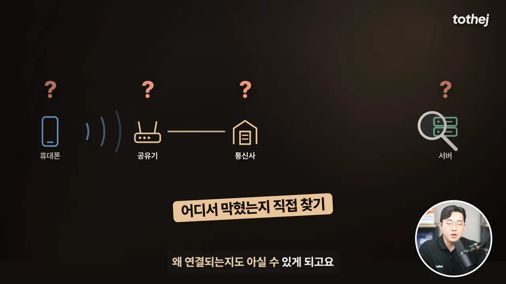
따라갈 순서는 여섯 단계예요. 화면의 곡선 위 번호가 순서대로 선 없이 공유기까지, 공유기가 하는 일, 끊긴 구간 찾기, 바다를 건너는 길, 와이파이 5·6·7·8, 바이브코딩에서 생기는 일이에요. 와이파이의 역사는 맨 끝에 짧게 붙어요.
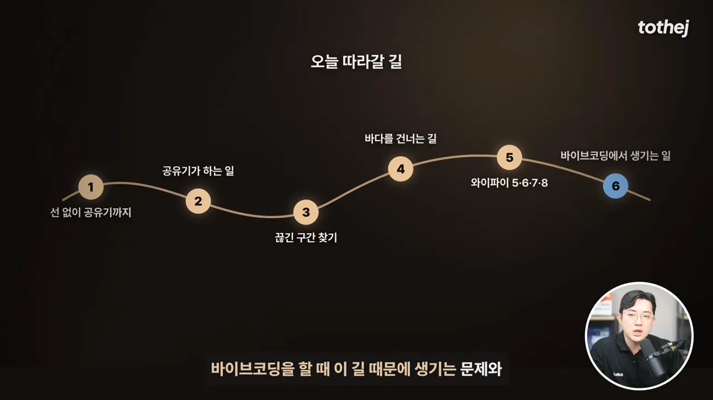
데이터는 조각으로 오가요
웹페이지 하나를 열 때 브라우저가 하는 일을 개발자 도구의 네트워크 탭으로 보면 요청이 줄줄이 찍혀요. 오른쪽 목록에 photo.jpg, ad.js, font.woff2 같은 파일이 사진·글자·광고·글꼴 색 꼬리표를 달고 열네 개쯤 늘어서 있어요.
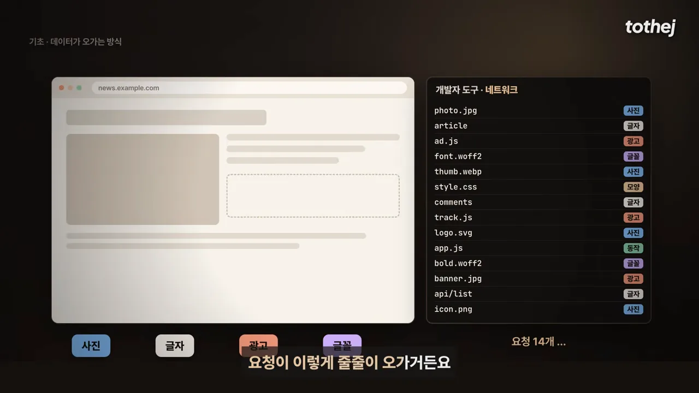
이 요청 하나하나도 통째로 가지 않고 작은 조각으로 잘려서 가요. 조각마다 '보낸 곳 → 받을 곳' 주소가 맨 앞에 붙고, 그 뒤에 내용 일부가 실려요. 이 조각이 패킷이에요. 중간에 조각 하나가 빠지면 받는 쪽이 그 조각만 다시 보내 달라고 해요.
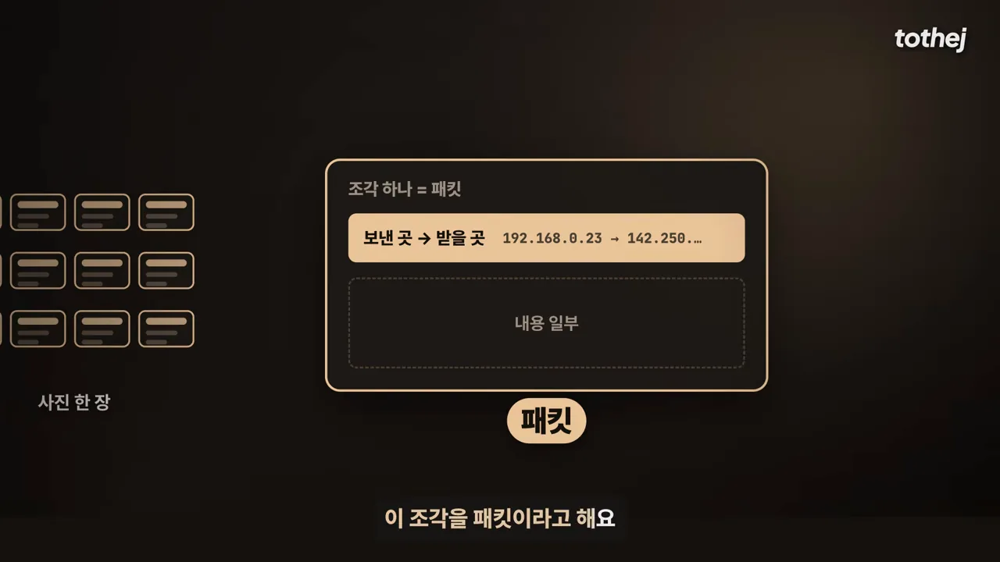
인터넷은 전 세계 컴퓨터가 선으로 이어져 이 조각을 주고받는 그물이에요. 그럼 와이파이는 어디를 맡을까요. 생각보다 짧아요. 아래 그림처럼 거실에서 휴대폰과 공유기 사이 몇 미터만 전파로 주고받고, 벽 안쪽 공유기 뒤부터는 다시 선이에요.
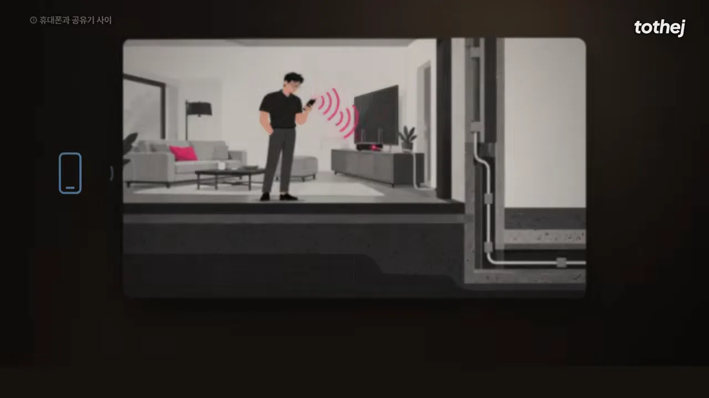
선 없이 0과 1을 보내는 법
휴대폰이 보내는 건 결국 0과 1이에요. 사진도 글자도 클로드에 보내는 질문도 0과 1이 길게 늘어선 줄로 바뀌어 나가요. 이 줄을 선 없이 허공으로 보내야 해요.
휴대폰 안 안테나에 전기를 아주 빠르게 앞뒤로 흔들어 보내면 그 떨림이 주변으로 퍼져요. 이게 전파예요. 전파는 빛과 같은 종류인데 떨리는 빠르기가 달라서 눈에 안 보일 뿐이에요. 그래서 빛처럼 1초에 30만 km를 가고, 거실 10m는 1억분의 3초쯤에 건너요. 빛과 달리 벽이나 문도 어느 정도 뚫어요.
전파에 0과 1을 싣는 변조
그냥 떨리기만 하는 전파에는 정보가 없어요. 그래서 보내는 쪽이 0과 1에 맞춰 전파 모양을 살짝씩 바꿔요. 가장 쉬운 방법은 세기예요. 아래 화면에서 위쪽 1 0 1 1 0 1 0 0에 맞춰 크게 떨리는 구간이 1, 작게 떨리는 구간이 0이에요.
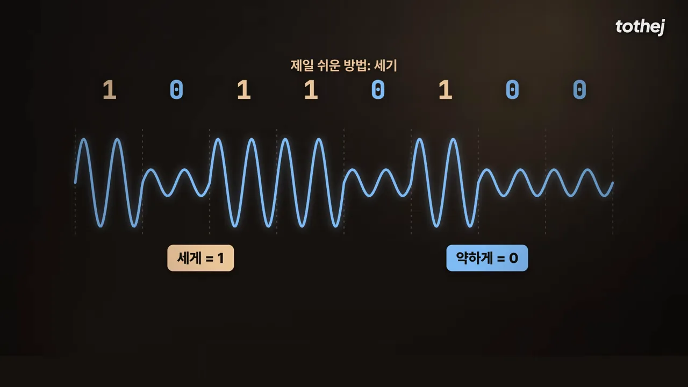
와이파이는 세기에 더해 떨림이 시작되는 타이밍까지 함께 바꿔서 구별되는 모양을 아주 많이 만들어요. 아래 왼쪽 점 격자의 점 하나가 모양 하나예요. 와이파이 6은 이 점이 1,024개라서 점 하나가 오른쪽처럼 0과 1 열 개를 나타내요. 이렇게 0과 1을 전파 모양에 싣는 걸 변조라고 해요.
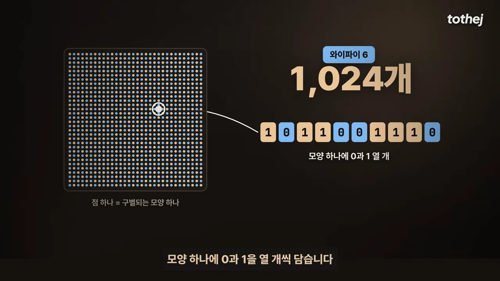
공유기는 이걸 거꾸로 해요. 전파가 공유기 안테나를 지나가면 안테나에 아주 약한 전기가 같은 모양으로 생겨요. 공유기는 그 세기와 타이밍을 읽어 0과 1로 되돌려요. 이게 복조예요. '모뎀'이라는 이름도 변조(modulation)와 복조(demodulation)를 합친 말이에요. 답을 보낼 때는 반대로 공유기가 쏘고 휴대폰이 받아요.
여러 갈래로 나눠 보내고, 받았다고 답해요
와이파이는 한 줄로만 보내지 않아요. 쓰는 주파수 폭을 수백, 많게는 수천 개의 가는 주파수로 쪼개서 조각을 나눠 싣고 한꺼번에 보내요. 아래 그림의 위쪽 꺾인 선이 벽에 튕겨 조금 늦게 도착하는 전파예요. 나눠 보내면 이렇게 늦게 섞여 들어오는 전파가 있어도 신호가 덜 뭉개져요. 이 기술은 맨 끝 역사 이야기에서 다시 나와요.
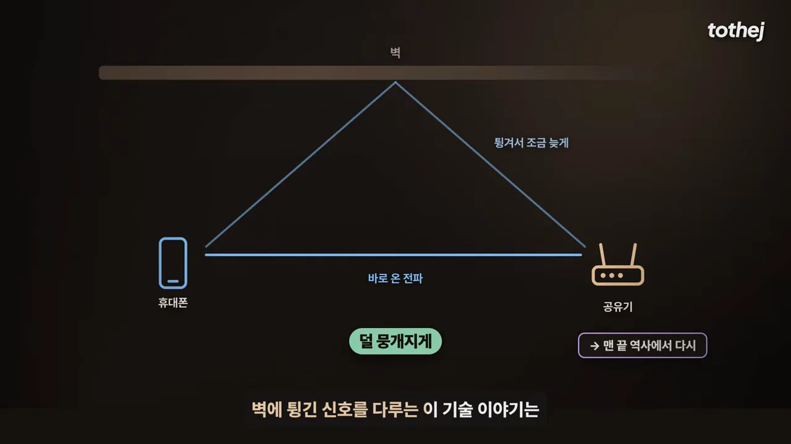
공유기는 조각을 제대로 받으면 바로 짧은 확인 신호를 돌려보내요. 이 신호가 안 오면 휴대폰이 같은 조각을 다시 보내요. 또 전파는 벽 너머 옆집까지 퍼져요. 아래 그림에서 공유기 전파 동심원이 옆집 노트북까지 닿는 게 보여요. 그래서 비밀번호가 걸린 와이파이는 내용을 암호로 잠가 보내요. 비밀번호가 그 열쇠를 만드는 재료라, 옆집에 전파는 닿아도 내용은 못 읽어요.
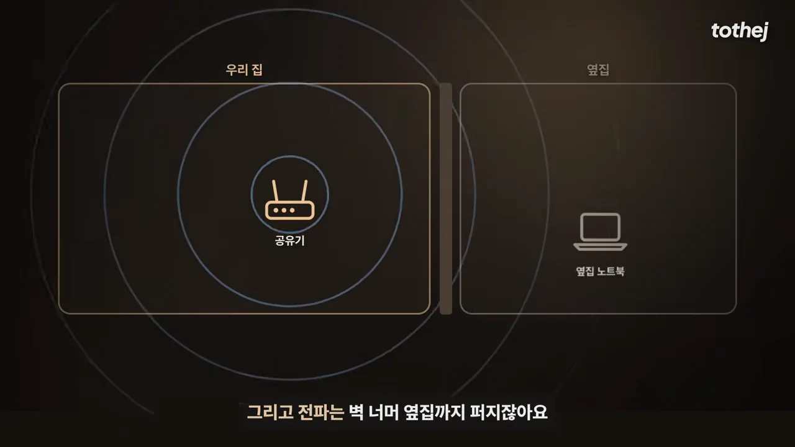
와이파이는 규칙의 이름이에요
정리하면 휴대폰은 0과 1을 전파 모양으로 바꿔 쏘고, 공유기는 그 모양을 0과 1로 읽어요. 선이 하던 일을 공기 중의 전파가 대신해요. 와이파이는 이렇게 주고받는 규칙의 이름이고, 정식 이름은 IEEE(Institute of Electrical and Electronics Engineers) 802.11이라는 국제 표준이에요. '와이파이 6, 7'은 이 규칙의 세대 번호예요.
그래서 처음의 '인터넷 없음'은 이렇게 읽어요. 아래 화면처럼 휴대폰–공유기 구간에는 초록 체크가 있고, 공유기와 통신사 사이에 빨간 X가 있어요. 무선 구간은 멀쩡하고 그 뒤 어딘가가 끊긴 거예요. 막대 세 칸은 공유기까지의 신호 세기였을 뿐이에요.
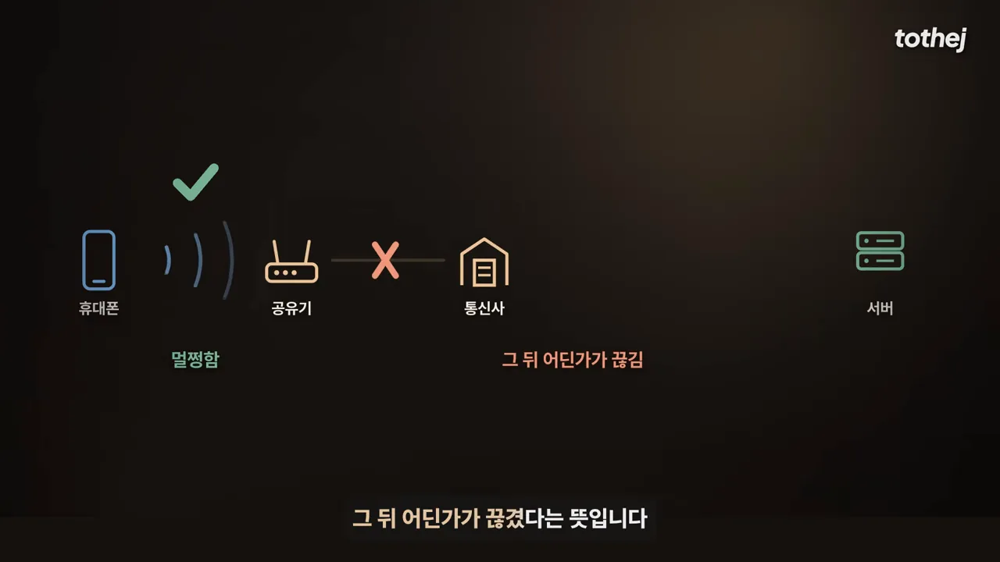
2.4GHz와 5GHz, 그리고 공유기 자리
와이파이 목록에 이름 끝에 _5G가 붙은 게 하나 더 있는 경우가 있어요. 5GHz 전파를 쓰는 와이파이예요. GHz는 전파가 1초에 몇 번 떨리는지를 말해요. 2.4GHz는 1초에 24억 번, 5GHz는 50억 번이에요.
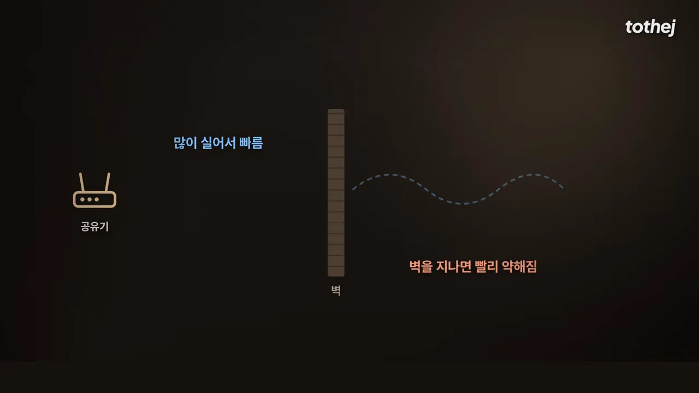
많이 떨릴수록 한 번에 실어 나르는 양이 많아 빠르지만, 벽을 지나면 빨리 약해져요. 위 그림의 벽 뒤 점선이 흐려지는 게 그 뜻이에요. 그래서 영상이 말하는 성질을 표로 놓으면 이래요.
| 대역 | 1초에 떨리는 횟수 | 속도 | 벽을 지날 때 | 잘 맞는 곳 |
|---|---|---|---|---|
| 2.4GHz | 24억 번 | 상대적으로 느려요 | 덜 약해져요 | 벽 두세 개 건넌 방 |
| 5GHz | 50억 번 | 빨라요 | 빨리 약해져요 | 공유기가 있는 방 |
| 6GHz | — | 5GHz보다 더 | 5GHz보다 더 약해져요 | 와이파이 6E부터 써요 |
그래서 공유기 자리도 중요해요. 아래 화면의 왼쪽 아래 'TV장 안·바닥 구석'에는 X가, 오른쪽 위 '조금 높고 앞이 트인 곳'에는 전파가 넓게 퍼지는 그림이 있어요. 높고 트인 곳에 둬야 방 끝까지 더 잘 닿아요.
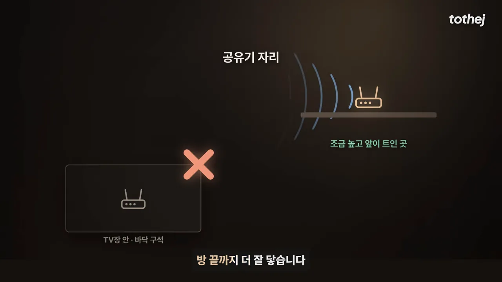
여러 기기가 차례를 나누는 규칙
한 공유기에 휴대폰, 노트북, TV(Television)까지 여러 기기가 붙어 있어요. 이 기기들이 같은 전파를 나눠 쓰면서 동시에 보내면 서로 부딪혀요. 그래서 와이파이에는 차례를 정하는 규칙이 있어요. 아래 화면의 세 줄이 그 규칙이에요. 세 번째 줄 옆 주사위가 '무작위로 정한 시간'을 뜻해요.
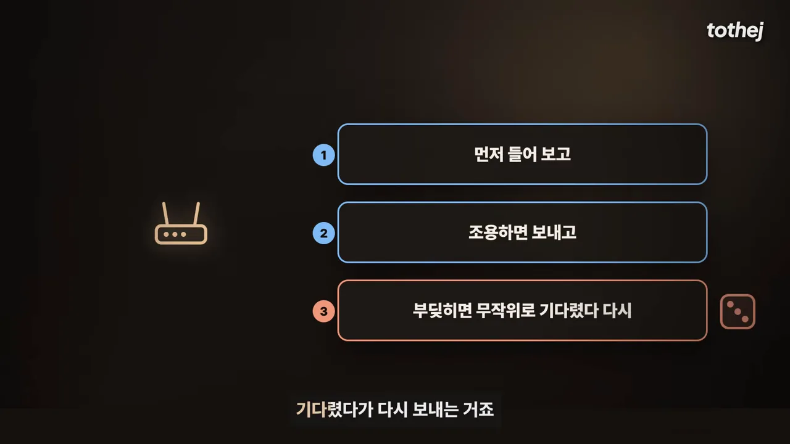
각자 무작위로 기다리는 시간이 달라야 다음에 또 같이 부딪히지 않아요. 이 '부딪히면 무작위로 기다렸다 다시'라는 생각은 1971년 하와이에서 시작됐어요. 역사 부분에서 다시 나와요.
공유기는 번호를 나눠 주고 바꿔 주는 문
이제 공유기 안으로 들어가요. 휴대폰 와이파이 설정에서 연결된 와이파이 옆 버튼을 누르면 'IP 주소'와 '라우터' 칸이 있어요. 아래 화면에서 노랗게 강조된 두 줄이에요. IP 주소는 인터넷에서 기기를 찾아가는 번호이고, 라우터는 공유기를 말해요.
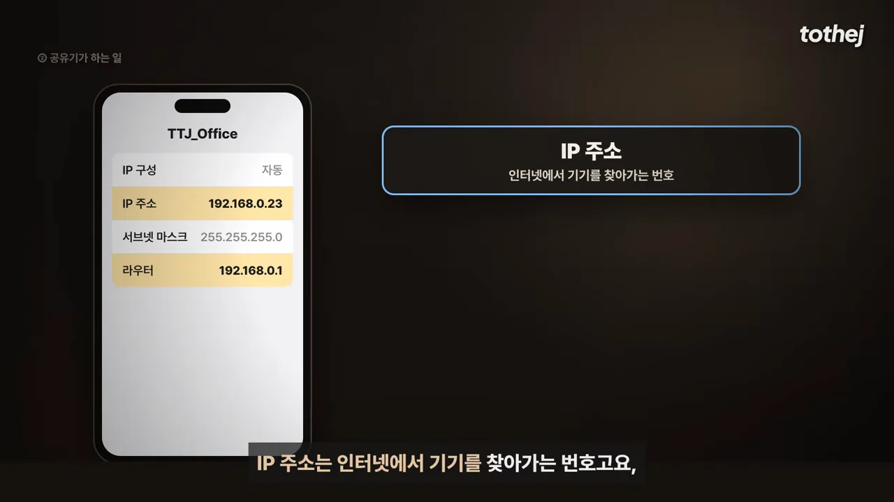
192.168.0.23, 공유기는 192.168.0.1이에요. 둘 다 같은 192.168.0으로 시작해요. 영상 06:53에서 보기번호를 빌려주는 DHCP
발표자의 휴대폰은 192.168.0.23을, 같은 와이파이에 붙은 노트북은 끝자리만 다른 192.168.0.31을 받았어요. 와이파이에 붙는 순간 공유기가 번호를 하나씩 빌려주기 때문이에요. 이렇게 번호를 나눠 주는 걸 DHCP(Dynamic Host Configuration Protocol)라고 해요.
라우터 칸의 주소를 브라우저 주소창에 넣으면 공유기 관리 화면이 열려요. 아래 '연결된 기기' 목록을 보면 휴대폰 .23, 노트북 .31, 프린터 .37, TV .42가 저마다 번호를 하나씩 받아 갔어요.
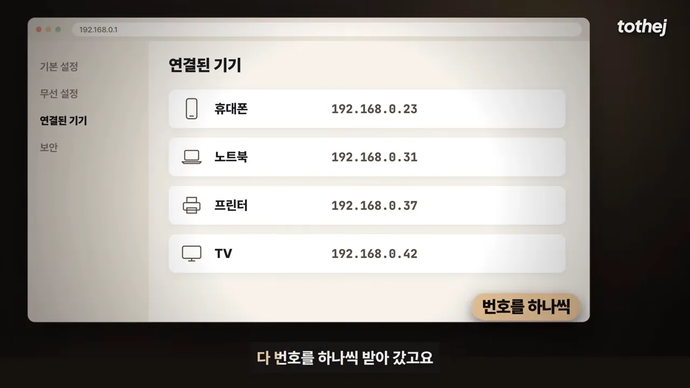
모두가 같은 번호를 쓰는데 어떻게 찾을까요
그런데 이상한 점이 있어요. 192.168로 시작하는 번호는 집이나 사무실 안에서만 쓰라고 따로 정해 둔 번호예요. 그래서 아래 화면처럼 수많은 집의 공유기가 똑같이 192.168.0.1을 써요. 이렇게 겹치는 번호로 인터넷에서 서로를 어떻게 찾을까요.
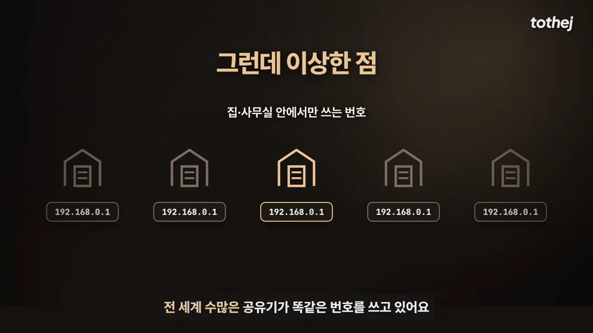
검색창에 '내 IP'라고 쳐 보면 답이 보여요. 아래 화면처럼 노트북에서도 휴대폰에서도 61.xxx.xxx.xx로 같은 숫자가 나와요. 192.168과는 전혀 다른 번호예요. 이게 통신사가 우리 공유기에 준 공인 IP, 즉 인터넷 바깥에서 보이는 우리 번호예요.
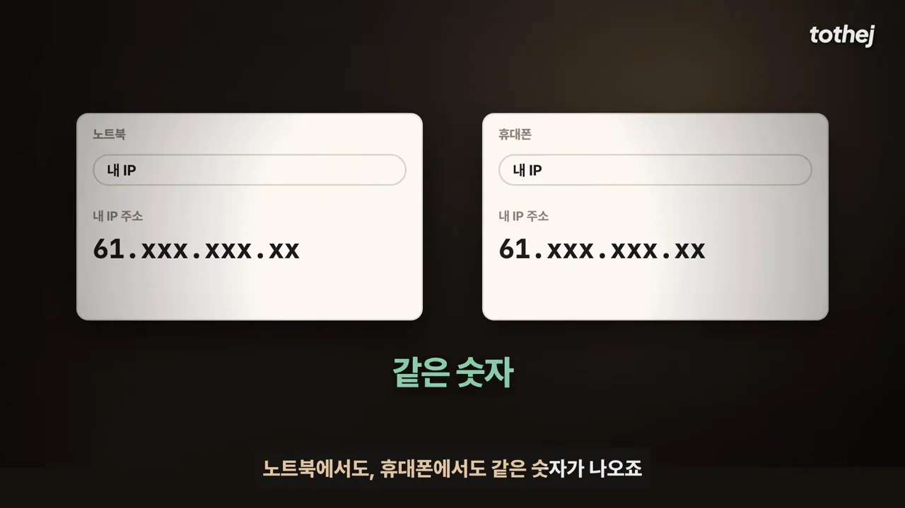
안팎 번호를 잇는 주소 변환
공유기는 안쪽 기기가 밖으로 보내는 조각에 이 바깥 번호를 붙여 내보내요. 답이 돌아오면 누가 보낸 건지 기억해 뒀다가 안쪽 기기로 다시 넘겨줘요. 아래 화면 가운데 공유기 아래 '기억해 둠 .23 → 서버' 상자가 그 기억이에요. 이걸 NAT(Network Address Translation), 주소 변환이라고 해요.
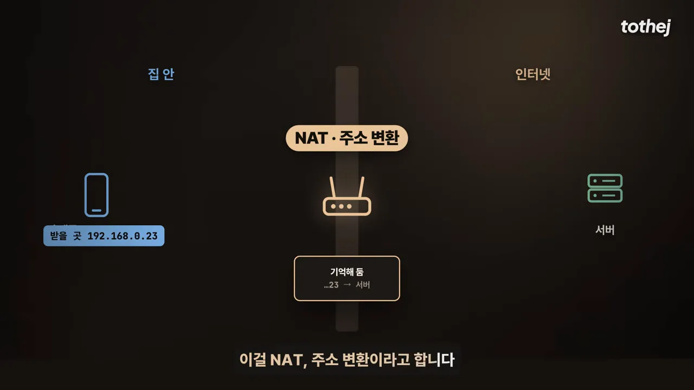
공유기를 껐다 켜면 고쳐질 때가 있는 이유도 여기서 나와요. 공유기도 작은 컴퓨터라서, 껐다 켜면 통신사와 연결을 처음부터 다시 맺고 안에 쌓아 둔 연결 기록도 비워요.
내부 번호는 그 공유기 안에서만 통해요
발표자 사무실에는 늘 켜 둔 맥미니가 한 대 있어요. 거기 띄운 작업 페이지를 사무실 다른 컴퓨터에서 열 때 192.168 번호로 열어요. 같은 와이파이라서 열려요. 그런데 아래 화면 오른쪽처럼 사무실 밖(LTE(Long Term Evolution))의 휴대폰에서 같은 주소를 치면 '연결할 수 없음'이 떠요.
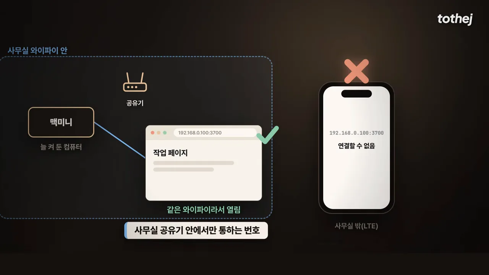
끊긴 구간 찾기와 바다를 건너는 길
처음 장면으로 돌아가요. 휴대폰은 인터넷이 없다는 걸 어떻게 알았을까요. 와이파이에 붙자마자 제조사가 정해 둔 확인용 주소에 한 번 접속해 보기 때문이에요. 아래 화면 오른쪽 두 상자가 그 주소예요. 아이폰은 애플의 captive.apple.com, 안드로이드는 구글의 connectivitycheck.gstatic.com이에요.
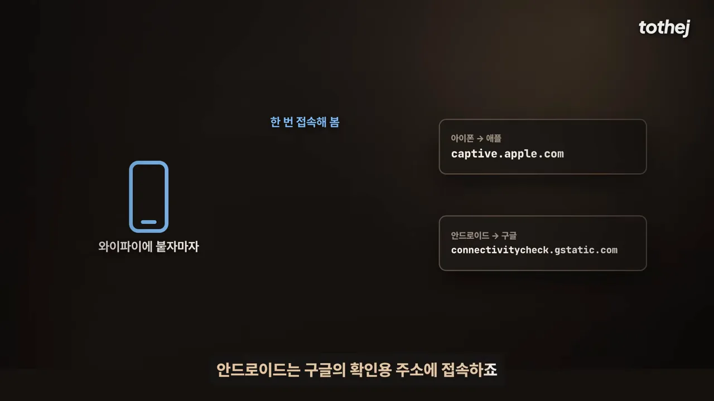
애플 주소를 브라우저로 직접 열면 화면에 'Success' 한 단어만 떠요. 이 한 단어가 제대로 돌아오면 인터넷 연결, 안 돌아오면 인터넷 없음이에요. 카페 와이파이에 붙으면 로그인 화면이 저절로 뜨는 것도 같은 원리예요. 아래 화면처럼 확인 페이지 대신 카페 로그인 페이지가 돌아와서예요.
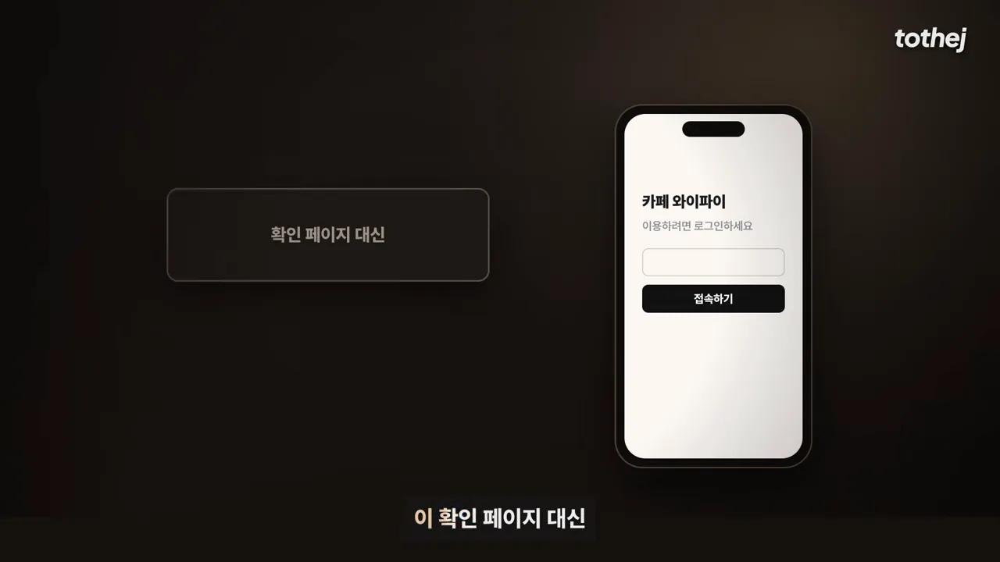
ping 세 줄로 끊긴 구간 찾기
이제 직접 찾아요. 터미널에서 ping이라는 명령을 써요. 상대에게 신호를 보내고 답이 몇 밀리초 만에 오는지 재 주는 명령이에요. 아래 화면처럼 세 줄을 차례로 쳐요. 첫 줄은 공유기 주소, 둘째 줄은 구글이 운영하는 공개 서버 8.8.8.8, 셋째 줄은 google.com이라는 이름이에요.
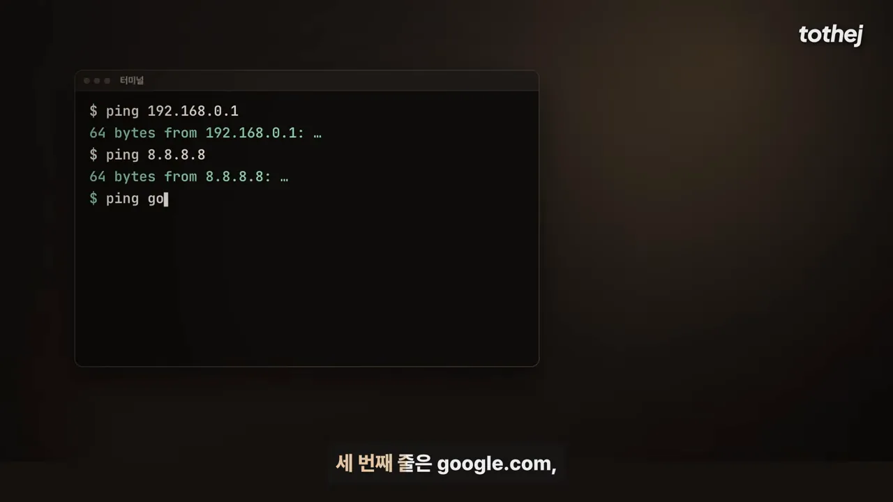
둘째 줄은 숫자 주소로, 셋째 줄은 이름으로 보내는 게 핵심이에요. 이름을 숫자 주소로 바꿔 주는 게 DNS 서버라서, 숫자로는 되는데 이름으로만 안 되면 DNS 쪽 문제예요. 영상이 말한 판단과 할 일을 표로 묶으면 이래요.
| 결과 | 막힌 구간 | 해 볼 것 |
|---|---|---|
1줄(ping 공유기 주소)부터 안 돼요 | 와이파이·공유기 | 공유기 가까이 가 보고, 공유기 불빛과 전원부터 봐요 |
1줄은 되는데 2줄(ping 8.8.8.8)이 안 돼요 | 공유기 뒤 선·통신사 | 공유기 뒤 선이 빠지지 않았는지, 통신사 장애 안내가 떠 있는지 봐요 |
2줄까지 되는데 3줄(ping google.com)만 안 돼요 | DNS | 네트워크 설정의 DNS 칸에 8.8.8.8(구글)이나 1.1.1.1(Cloudflare)을 넣어 봐요 |
아래 화면은 이 판단을 그림으로 보여 줘요. 첫 줄에서 빨간 점이면 '와이파이·공유기', 첫 줄 초록에 둘째 줄 빨강이면 '공유기 뒤쪽 선·통신사'예요.
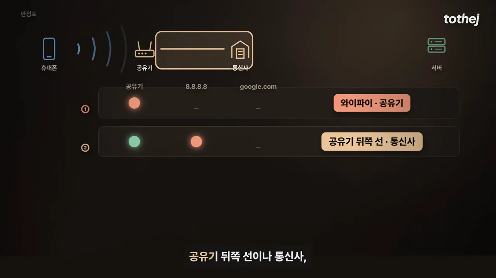
발표자는 이럴 땐 AI에게 물어볼 수도 없다고 짚어요. 클로드도 이 길을 타고 오니까요. 그래서 이 세 줄만큼은 직접 기억해 두는 게 편해요.
공유기 다음 길을 찍는 traceroute
이번엔 조각이 공유기 다음에 어디로 가는지 찍어요. 맥에서는 traceroute, 윈도우에서는 tracert라는 명령이에요. 목적지까지 거쳐 가는 장비를 한 줄에 하나씩 보여 줘요. 첫 줄은 우리 공유기, 그다음 줄부터는 통신사 장비들이에요.
통신사는 다른 통신사와 망을 서로 이어 두고 있어요. 아래 그림의 왼쪽 '우리 통신사 망'과 오른쪽 '다른 통신사 망' 사이 초록 네모가 '서로 이어 둔 연결 지점'이에요. 목적지가 다른 통신사 쪽이면 이 지점을 지나 넘어가요.
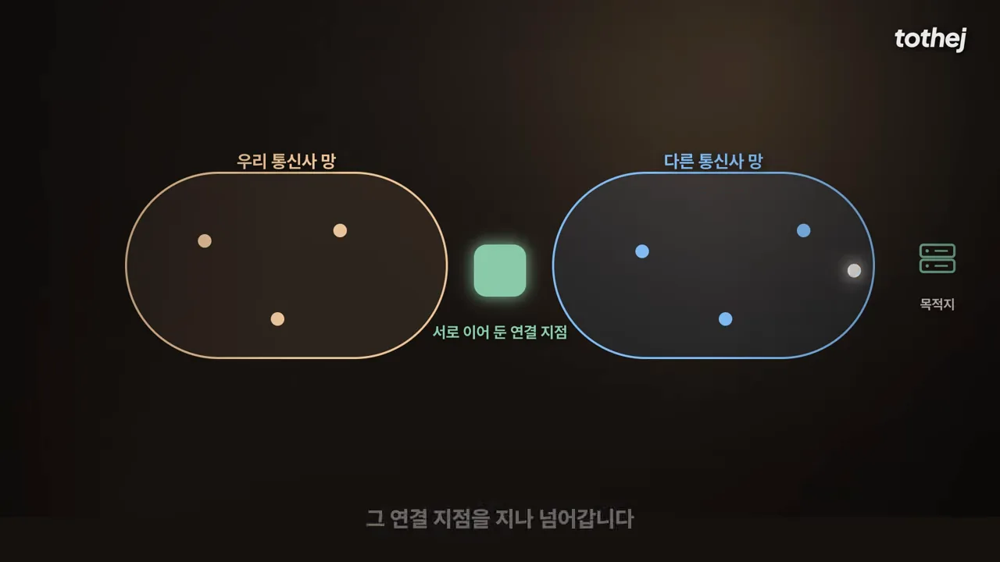
서울에 있는 서버는 끝까지 가도 10ms 남짓이에요. 미국 서부 서버로 보내면 달라요. 아래 결과의 일곱 번째 줄에서 숫자가 15.772 ms에서 134.735 ms로 훌쩍 뛰어요. 오른쪽 꼬리표 '16→135ms'가 그 점프이고, 여기가 바다를 건너는 구간이에요.
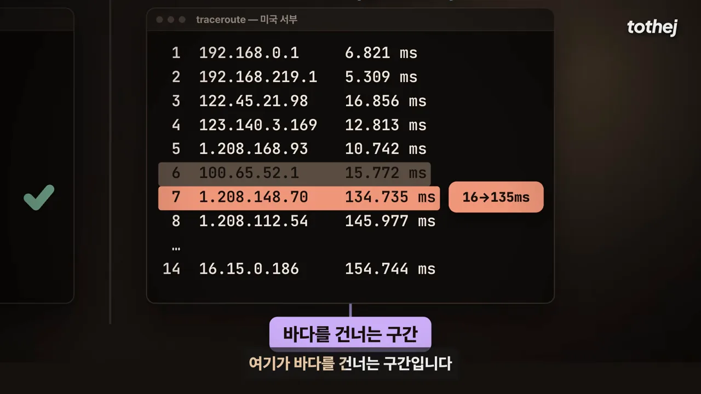
왜 이렇게 걸릴까요. 서울에서 로스앤젤레스까지 직선거리가 9,600km 정도예요. 광케이블 안에서 빛은 1초에 20만 km쯤 가요. 왕복 19,200km를 20만 km로 나누면 빛으로도 0.1초 가까이 걸려요. 실제 케이블은 직선보다 길어서 더 걸려요.
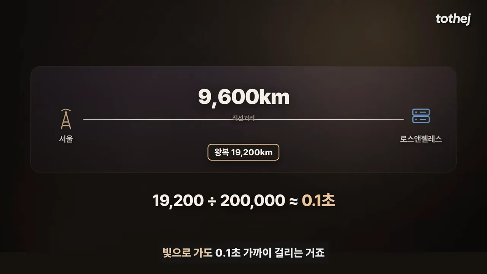
바다는 해저 케이블로 건너요
바다는 바닷속에 깔린 광케이블로 건너요. 해저 케이블 지도를 보면 우리나라는 부산·거제 같은 남쪽 바닷가로 케이블이 몰려 올라와요. 아래 지도의 주황 네모가 그 자리예요. 이렇게 케이블이 육지로 올라오는 곳을 육양국이라고 해요.
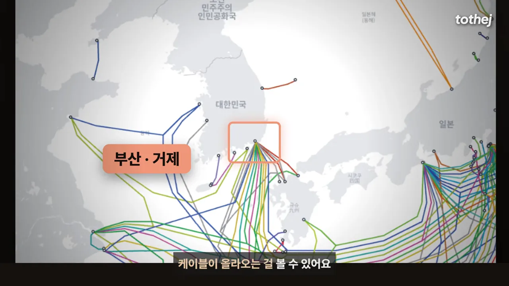
통신 시장 조사 회사 TeleGeography가 지난달 낸 집계로는 지금 쓰이는 해저 케이블이 전 세계에 607개예요. 새로 놓거나 놓을 계획인 것도 102개 더 있어요. 아래 화면 위쪽에 그 블로그 글의 문장이 그대로 보여요.
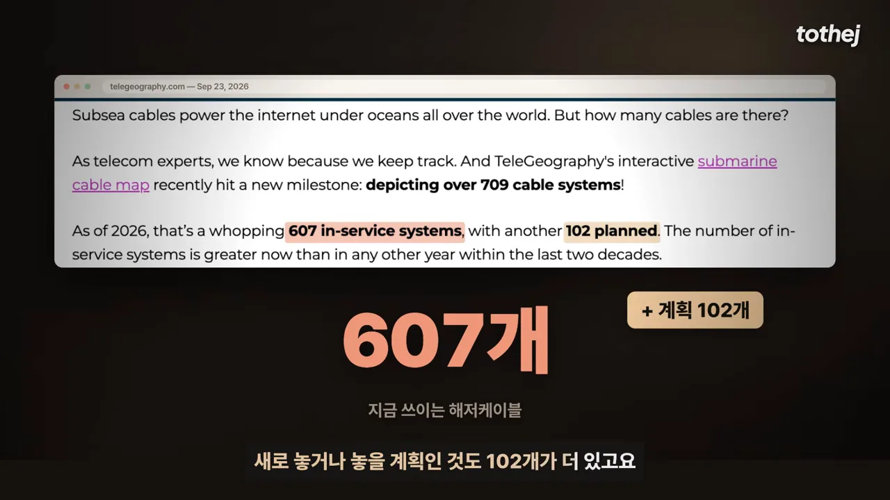
이제 길 전체가 보여요. 아래 그림처럼 휴대폰에서 출발한 조각은 와이파이로 몇 미터, 선으로 통신사까지, 그리고 해저 케이블로 바다를 건너 서버에 닿아요. 클로드에 보낸 질문 하나도 이 길로 AI 회사 서버까지 갔다가 같은 길로 답이 돌아와요.
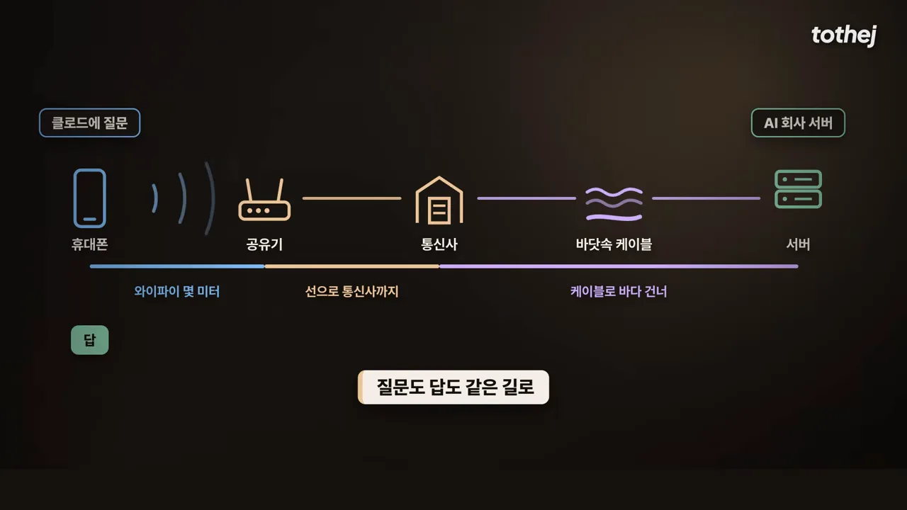
와이파이 5·6·7·8, 무엇이 달라졌나
요즘 자주 듣는 와이파이 5·6·7·8을 정리해요. 지금 집과 사무실에서 많이 쓰는 건 아래 카드의 5, 6, 7이에요. 카드 아래에 표준 이름 802.11ac, 802.11ax, 802.11be가 붙어 있어요. 발표자는 숫자가 올라갈 때마다 풀려고 한 문제가 다르다는 데 초점을 둬요.
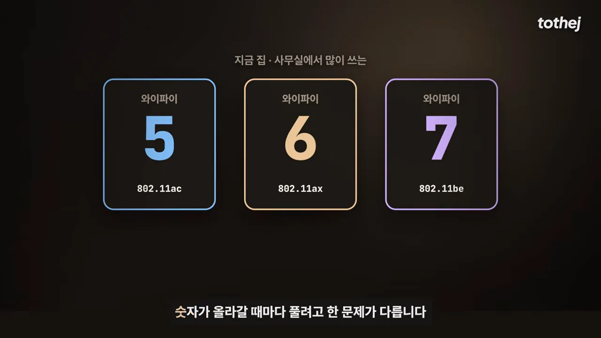
와이파이 5와 6
와이파이 5는 2013년에 나온 802.11ac예요. 5GHz 대역에서 한 번에 쓰는 주파수 폭을 최대 160MHz까지 넓혀서 한 번에 싣는 양을 늘렸어요. 공유기가 안테나 여러 개로 여러 기기에 동시에 보내는 기술도 이때 들어왔어요. 다만 아래 그림의 빨간 X처럼 기기에서 공유기로 가는 방향은 아직 안 됐어요.
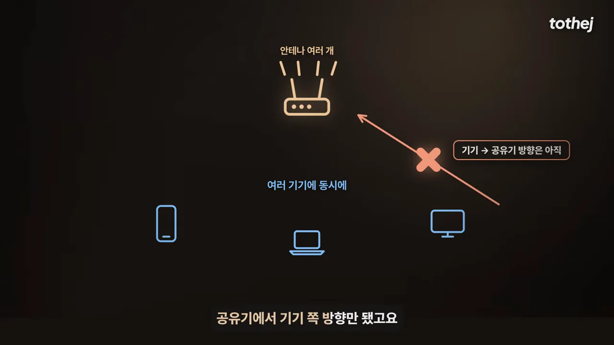
와이파이 6은 2019년부터 나온 802.11ax예요. 이번엔 최고 속도보다 기기가 많을 때를 풀었어요. 예전엔 작은 조각 하나를 보낼 때도 한 기기가 주파수 폭 전체를 차지했어요. 와이파이 6은 이 폭을 잘게 나눠 여러 기기 몫을 한 번에 같이 담아 보내요. 아래 그림에서 세로가 주파수 폭, 가로가 시간이고, 색깔 하나가 기기 하나예요. 한 칸 한 칸에 여러 색이 섞여 있는 게 OFDMA(Orthogonal Frequency-Division Multiple Access)예요.
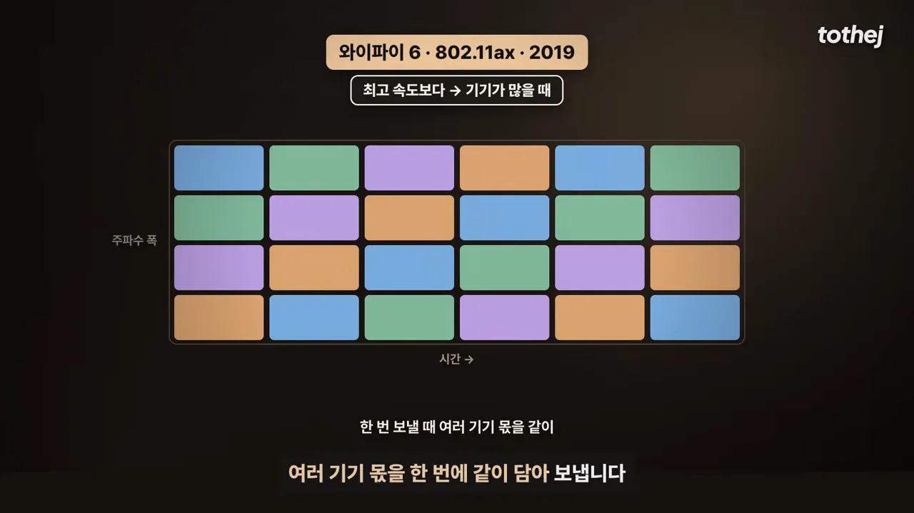
와이파이 6에선 동시에 보내는 기술도 기기에서 공유기 방향까지 돼요. 휴대폰이 공유기와 깨어날 시간을 미리 약속해 두고 그 사이엔 쉬어서 배터리도 덜 써요. 와이파이 6E는 6GHz라는 새 대역을 더 열었어요.
와이파이 7
와이파이 7은 802.11be이고 2024년부터 인증 제품이 나왔어요. 2.4·5·6GHz 중 하나씩만 쓰던 걸 여러 개 묶어 동시에 쓸 수 있게 됐어요. 한쪽이 붐비면 다른 쪽으로 보내기도 해요. 6GHz에서는 주파수 폭을 아래 그림처럼 와이파이 6의 160MHz에서 320MHz로 두 배 넓혔어요.
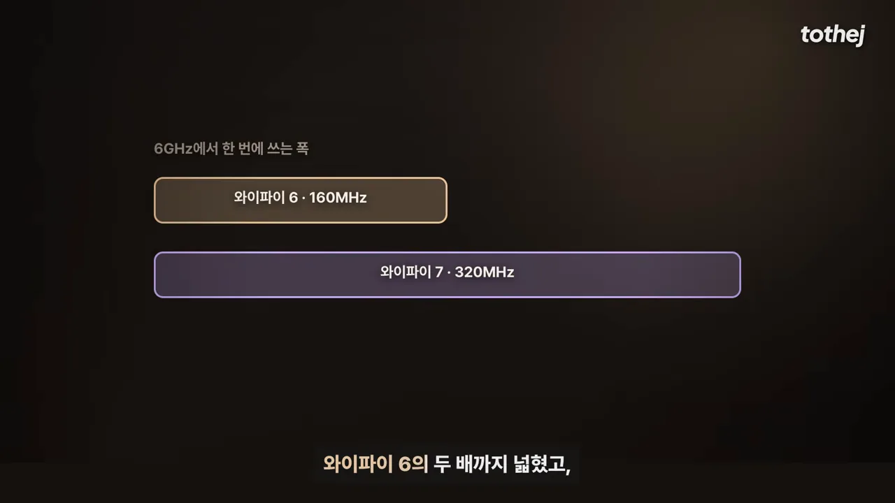
모양 개수도 1,024개에서 4,096개로 늘려서 모양 하나에 0과 1을 12개씩 담아요. 앞에서 본 변조 이야기가 여기서 이어져요. 다만 휴대폰과 공유기가 둘 다 7이어야 7로 붙어요. 아래 그림의 둘째 줄처럼 휴대폰이 6이면 공유기가 7이어도 6으로 붙어요.
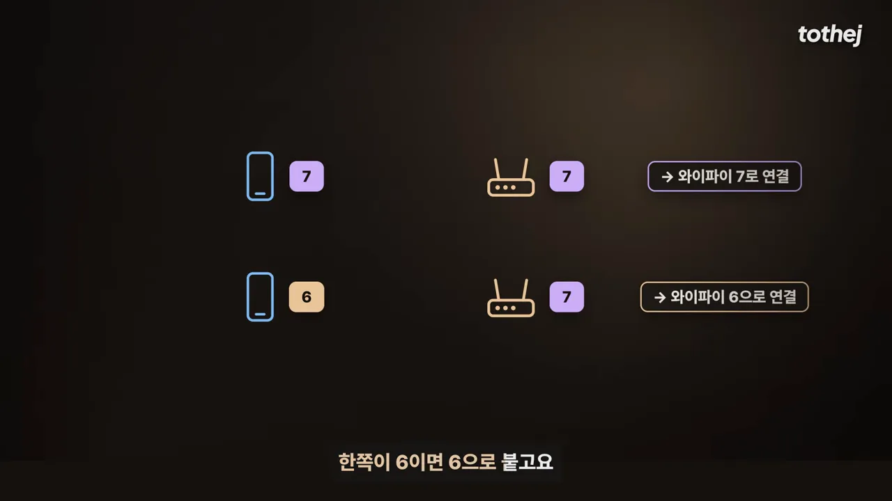
내 기기가 몇 세대로 붙어 있는지도 볼 수 있어요. 맥에서는 시스템 정보의 Wi-Fi 항목에 'PHY 모드' 칸이 있어요. 아래 화면에서 노랗게 강조된 값이 802.11ax라 발표자의 맥미니는 와이파이 6으로 붙어 있어요. ac면 5, ax면 6, be면 7이에요.
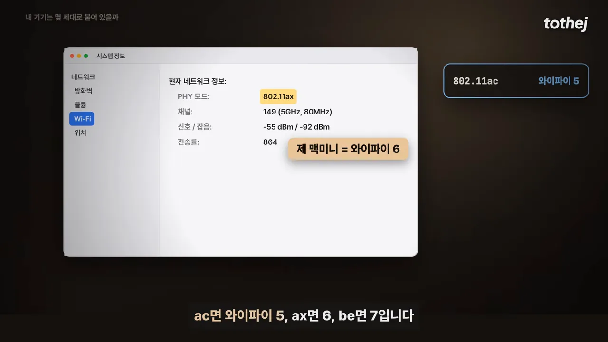
와이파이 8
와이파이 8은 802.11bn이라는 이름을 받았고, 지난달부터 공유기가 팔리기 시작했어요. 아래 화면의 기사 문단에 에이수스가 10월 6일 출하를 시작했고 TP-Link도 9월 30일부터 예약을 받았다는 내용이 강조돼 있어요.
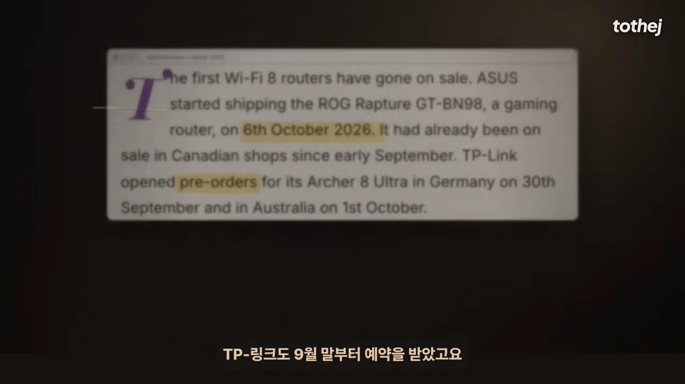
와이파이 8 표준은 아직 확정 전이고, 확정은 2028년쯤으로 예상돼요. 와이파이 8은 최고 속도보다 끊김을 줄이는 쪽에 힘을 줬어요. 아래 그림처럼 공유기 여러 대가 서로 조율해서 방 끝에서도 덜 끊기게 하는 방향이에요. 다만 지금 나와 있는 휴대폰과 노트북은 대부분 와이파이 8을 못 써서, 공유기만 8이면 7이나 6으로 붙어요.
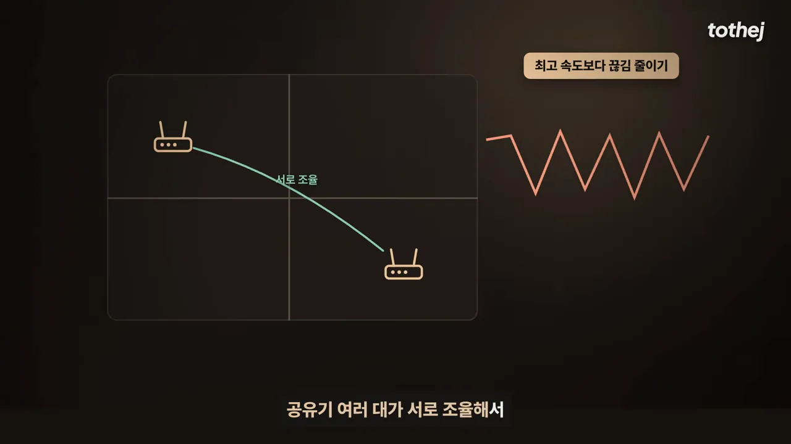
영상이 말한 네 세대를 한 표로 모으면 이래요.
| 세대 | 표준 이름 | 시기 | 푼 문제 |
|---|---|---|---|
| 와이파이 5 | 802.11ac | 2013년 | 5GHz 폭을 160MHz로 넓혀 한 번에 싣는 양을 늘렸어요. 공유기 → 기기 동시 전송 |
| 와이파이 6 / 6E | 802.11ax | 2019년부터 | 기기가 많을 때. OFDMA, 양방향 동시 전송, 배터리 절약. 6E는 6GHz 추가 |
| 와이파이 7 | 802.11be | 2024년부터 인증 제품 | 여러 대역 동시 사용, 6GHz 폭 320MHz, 모양 4,096개 |
| 와이파이 8 | 802.11bn | 표준 확정 2028년쯤 예상 | 최고 속도보다 끊김 줄이기. 공유기끼리 조율 |
메시, 핫스팟, 위성 인터넷
메시 와이파이는 공유기 여러 대를 하나의 와이파이처럼 묶는 방식이에요. 집이 넓거나 벽이 많으면 방마다 하나씩 두고, 휴대폰은 들고 다니는 동안 가까운 쪽으로 알아서 옮겨 붙어요. 휴대폰의 5G나 LTE도 전파를 쓰지만 공유기 대신 통신사가 세운 기지국으로 바로 가요. 핫스팟을 켜면 휴대폰이 공유기 역할을 해요. 노트북은 휴대폰의 와이파이로 붙고, 휴대폰은 기지국으로 나가요.
스타링크 같은 위성 인터넷은 공유기 뒤쪽의 선을 하늘로 바꾼 거예요. 아래 그림에서 집 밖 안테나가 위성과 주고받는 보라색 곡선이 원래 선이 있던 자리를 대신해요. 그래도 왼쪽 파란 상자처럼 집 안은 여전히 와이파이이고, 오른쪽처럼 나라와 나라 사이 큰 데이터는 지금도 대부분 해저 케이블이 실어 날라요.
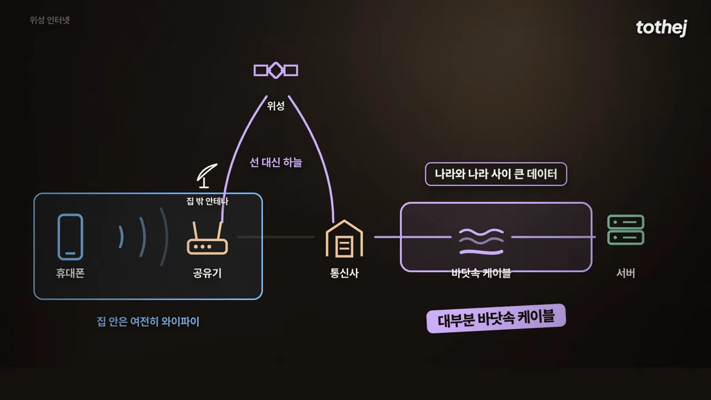
localhost 주소가 휴대폰에서 안 열리는 이유
이제 바이브코딩 쪽으로 와요. AI에게 사이트를 만들어 달라고 하면 끝에 이런 주소를 줘요. localhost:3000. 아래 화면처럼 localhost는 '지금 이 컴퓨터 자신'을 가리키는 이름이고, 숫자로는 127.0.0.1이에요. 뒤의 3000은 포트예요.
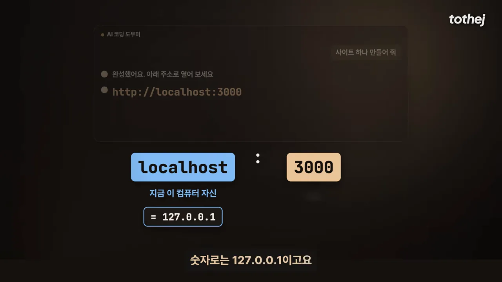
포트는 한 컴퓨터 안에서 프로그램마다 따로 쓰는 문 번호예요. AI가 내 컴퓨터 안에 작은 서버를 하나 띄워 두고 3000번 문으로 들어오라고 알려 주는 거예요. 아래 그림의 '내 컴퓨터 한 대' 안에 3000, 5173, 5432, 8080 문이 나란히 있고, 오른쪽 꼬리표처럼 Next.js는 3000번, Vite는 5173번을 기본으로 써요.
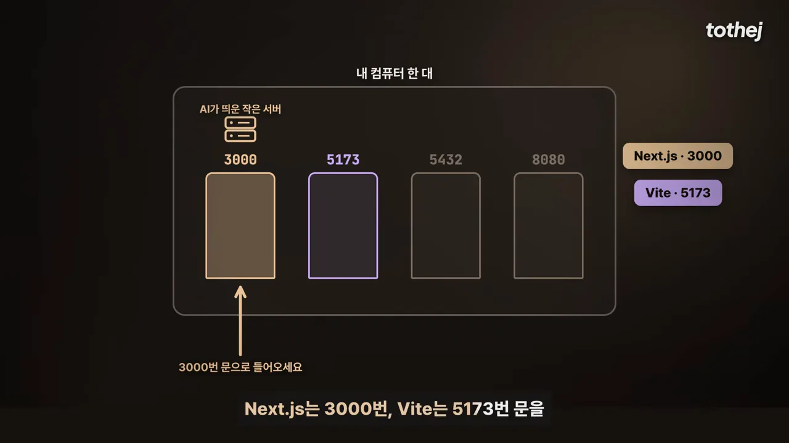
휴대폰에 localhost를 치면 휴대폰 자신을 두드려요
그래서 이 주소를 휴대폰에 그대로 치면 휴대폰은 휴대폰 자기 자신의 3000번 문을 두드려요. 아래 그림처럼 휴대폰에서 나간 화살표가 휴대폰으로 돌아와 '아무것도 없음' 문에 닿아요. 서버는 오른쪽 컴퓨터에 있는데 말이에요.
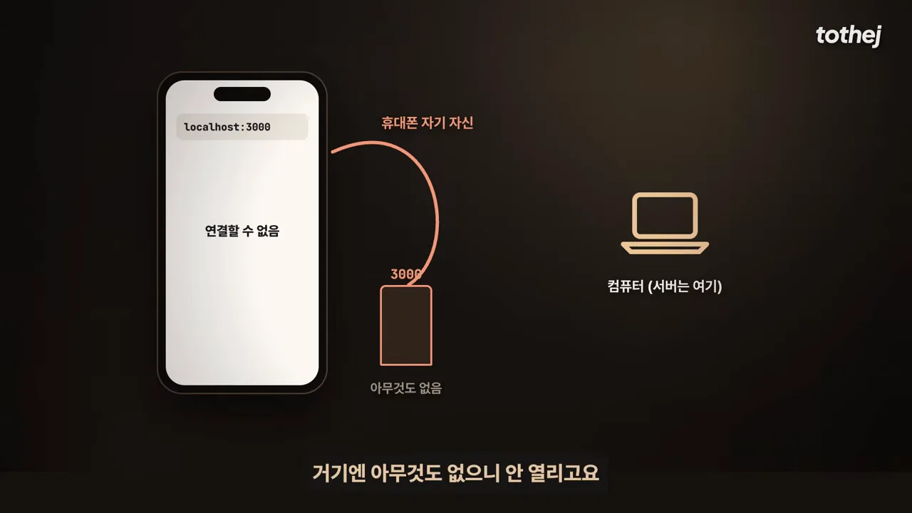
휴대폰에서 열려면 앞에서 본 컴퓨터의 내부 번호, 192.168로 시작하는 주소를 써야 해요. 아래 그림이 세 주소가 각각 어디까지 통하는지를 정리한 거예요.
Next.js와 Vite가 내부 주소를 보여 주는 방식
Next.js로 만든 프로젝트를 띄우면 Local 줄 아래에 Network 줄이 하나 더 나와요. 아래 화면에서 파랗게 강조된 줄이에요. 그게 바로 휴대폰에서 칠 내부 주소예요.
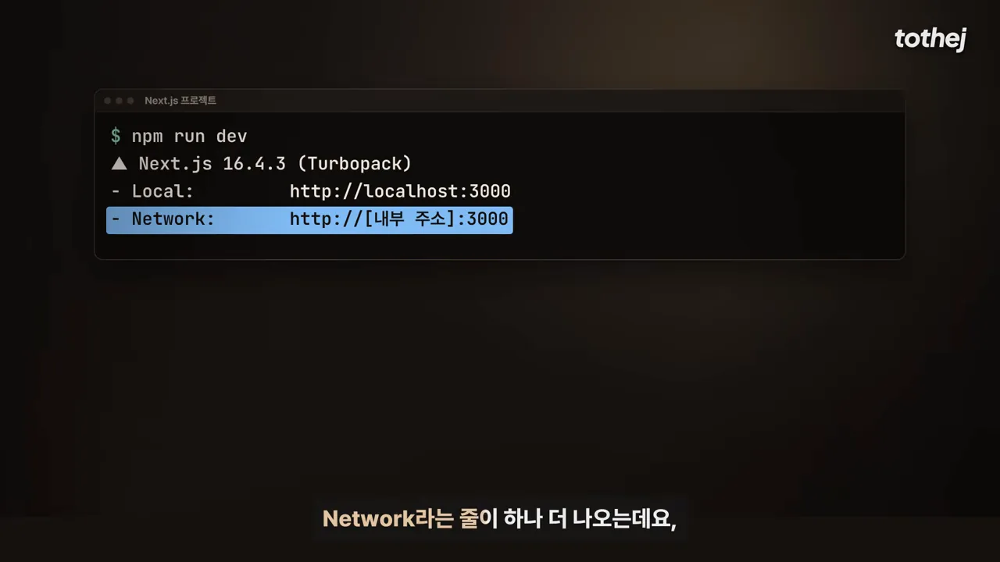
Vite로 만든 프로젝트는 다르게 나와요. 아래 화면처럼 Network 자리에 use --host to expose, 즉 '--host를 붙여야 열린다'는 안내만 있어요. 처음부터 이 컴퓨터 안에서만 열리게 해 둔 거예요. Vite는 개발 중인 파일이 바깥에 그대로 열리는 걸 막으려고 이렇게 정했다고 설명해요.
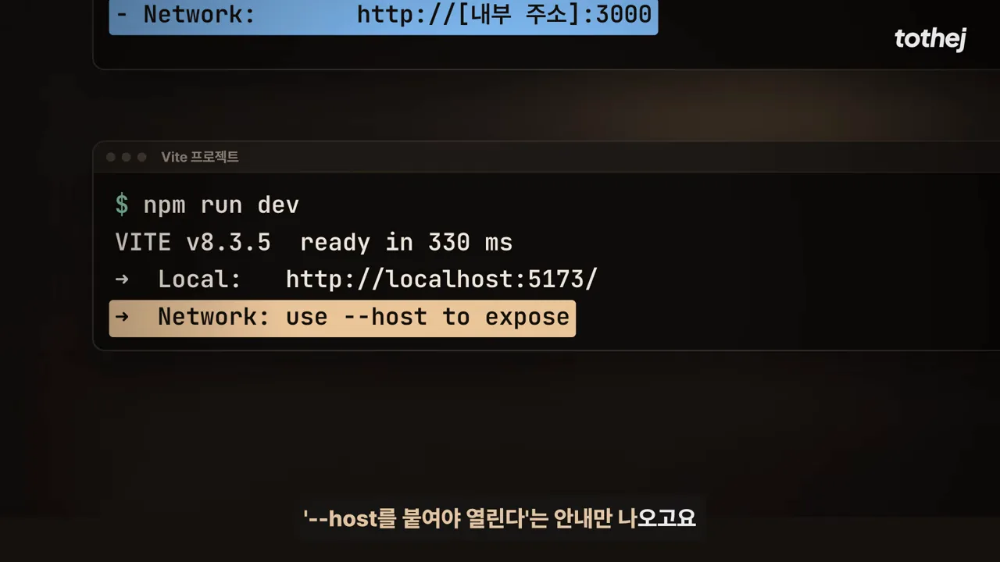
--host를 붙여야 해요. 영상 17:00에서 보기AI가 알려 준 3000으로 안 열릴 때는 터미널 맨 위도 한 번 봐요. 예전에 띄운 서버가 3000번 문을 아직 쓰고 있으면 아래 화면처럼 Port 3000 is in use 경고와 함께 3001로 띄웠다는 줄이 찍혀요. 실제 주소는 localhost:3001이 돼요.
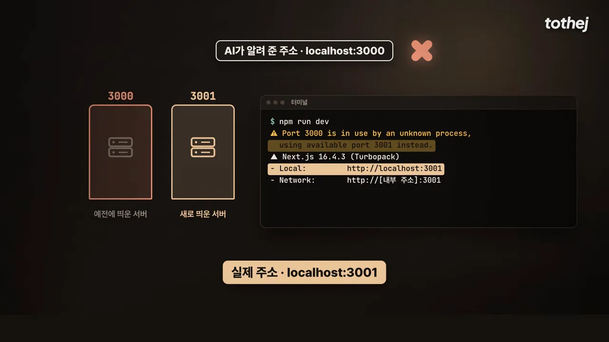
화면은 뜨는데 버튼이 안 눌리는 이유
실제로 막히는 장면이 하나 더 있어요. 발표자가 Next.js 16으로 빈 프로젝트를 새로 만들고, 버튼을 누르면 숫자가 올라가는 페이지를 넣어 직접 해 봤어요. 컴퓨터에서 열면 누를 때마다 숫자가 올라가요. 그런데 네트워크 주소로 휴대폰에서 열면 화면은 똑같이 뜨는데 버튼을 아무리 눌러도 0에서 안 움직였어요. 이때 터미널을 보면 아래처럼 노란 경고가 하나 찍혀 있어요.
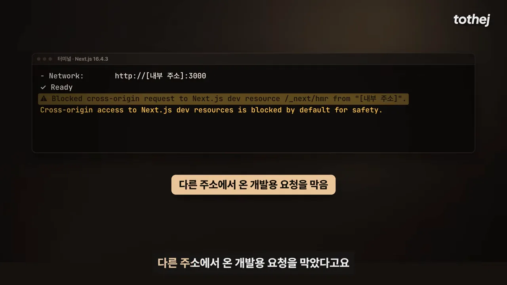
Next.js 16은 개발 서버를 띄울 때 쓴 이름, 보통 localhost가 아닌 주소에서 오는 개발용 요청을 기본으로 막아요. 그래서 아래 그림처럼 화면(HTML(HyperText Markup Language))은 휴대폰까지 왔지만, 개발 서버와 브라우저를 잇는 연결 하나가 막혀서 버튼에 기능이 붙지 못했어요.
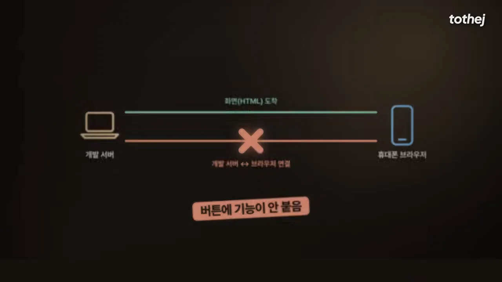
해결은 설정 한 줄이에요. 아래 화면처럼 next.config.ts에 allowedDevOrigins라는 설정으로 내 컴퓨터 내부 주소를 허용 목록에 넣어요.
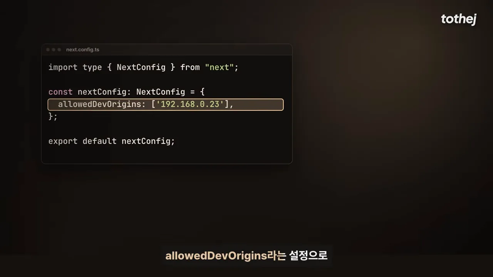
개발 서버를 다시 띄우면 휴대폰 쪽 버튼도 바로 올라가요. 아래 화면의 휴대폰에 '누른 횟수: 4'가 찍혀 있어요. 버튼 코드는 한 글자도 안 고쳤어요. 막힌 건 주소 쪽이었으니까요. 이걸 알면 AI에게도 처음부터 정확하게 말할 수 있어요.
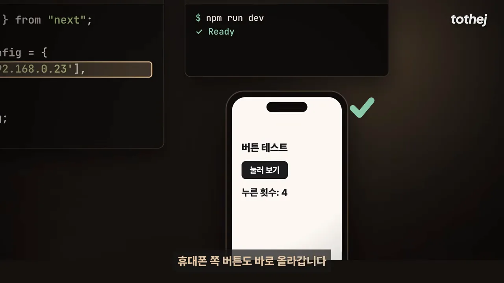
카페 와이파이에서는 또 달라요
카페 같은 공용 와이파이에는 손님 기기끼리 서로 못 보게 막아 둔 곳이 있어요. 그런 곳에서는 주소를 제대로 넣어도 휴대폰에서 노트북이 안 열릴 수 있어요. 반대로 막혀 있지 않은 곳이면 아래 그림처럼 --host로 열어 둔 개발 서버를 같은 카페의 다른 손님도 같은 주소로 열 수 있어요.
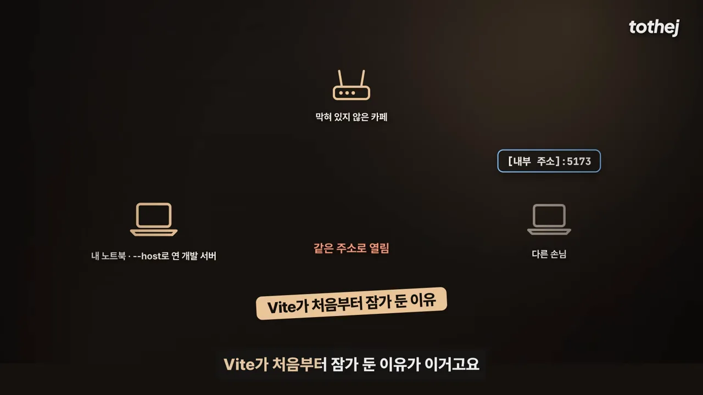
AI에게 길까지 같이 말하기
그래서 AI에게 시킬 때는 이 길을 같이 말해 주면 돼요. 발표자가 상황별로 건넨 문장은 세 가지예요. 아래 화면은 첫 번째, 휴대폰으로 확인하고 싶을 때의 문장이에요.
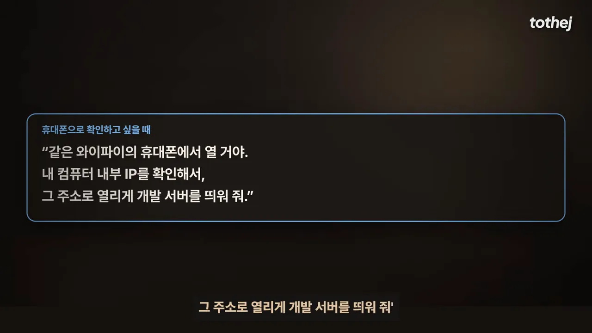
두 번째는 화면은 뜨는데 버튼이 안 먹을 때예요. 아래 화면처럼 증상과 함께 '터미널 경고'와 '허용 설정'을 짚어 줘요.
세 번째는 밖에 있는 사람에게도 보여 주고 싶을 때예요. 그건 내 컴퓨터 주소로는 안 되는 일이라서 이렇게 말해요.
배포해서 바깥에서 열리는 주소를 만들어 줘.
— 영상 19:05
공유기의 문을 열어 내 컴퓨터를 인터넷에 그대로 내놓는 방법도 있긴 해요. 발표자는 처음 하는 사람에게는 권하지 않아요. 공유기 뒤에 숨어 있던 컴퓨터를 바깥 누구나 두드릴 수 있게 되기 때문이에요.
와이파이의 짧은 역사와 마무리
마지막으로 와이파이가 어떻게 생겨났는지 짧게 봐요. 1971년 하와이 대학교는 여러 섬에 흩어진 캠퍼스를 전파로 잇는 ALOHAnet을 만들었어요. 여기서 쓴 방식은 '일단 보내고, 부딪혀서 답이 안 오면 무작위로 기다렸다가 다시 보낸다'였어요. 아래 그림에서 섬 A는 '잠깐 기다림', 섬 B는 '조금 더 기다림'이에요. 앞에서 본 와이파이의 차례 규칙이 여기서 출발했어요.
그런데 전파는 아무나 쓸 수 없어요. 나라가 허가를 내 줘야 써요. 1985년 미국 연방통신위원회(FCC(Federal Communications Commission))가 몇몇 대역을 허가 없이 통신에 써도 되게 열었어요. 아래 화면 위쪽 자물쇠 줄에서 초록으로 열린 칸이 그 대역들이에요.
그중 하나가 2.4GHz, 전자레인지가 쓰는 대역이에요. 음식을 데우는 기계들이 쓰던 자리라 당시엔 쓰레기 대역이라고도 불렸어요. 점심시간에 사무실 와이파이가 느려진다면 범인은 전자레인지일 수도 있어요.
블랙홀을 찾다가 생긴 빠른 와이파이
1990년대 초에는 집 안에서 전파가 벽에 튕기면서 신호가 뭉개지는 게 큰 문제였어요. 이걸 푼 사람들은 호주 CSIRO(Commonwealth Scientific and Industrial Research Organisation)의 전파천문학자들이에요. 아래 그림의 왼쪽 거대한 안테나가 우주에서 오는 희미한 전파를 받고, 오른쪽 원 안에 집 안 공유기가 그려져 있어요. 같은 기술이 두 곳에 쓰였다는 뜻이에요.
존 오설리번은 아주 작은 블랙홀이 터질 때 나온다는 희미한 전파를 찾고 있었어요. 1992년에 특허를 냈고, 이 기술이 와이파이 표준 802.11a/g/n에 들어가요. 블랙홀은 끝내 못 찾았지만, 대신 전 세계 거실에 빠른 와이파이가 생겼어요.
그리고 1997년, 지금 와이파이의 바탕이 된 첫 국제 표준 IEEE 802.11이 나와요. 아래 화면의 문단에서 노랗게 강조된 'released in 1997'이 그 연도예요.
AI가 코드를 짜도 길은 내가 알아야 해요
AI가 코드를 다 짜 주는 지금 이런 것까지 알아야 할까요. 발표자는 알아 두면 당연히 좋다고 봐요. AI는 내 사무실 공유기가 어떻게 생겼는지, 내 휴대폰이 어느 와이파이에 붙어 있는지 기본적으로 몰라요. 시키면 아래 화면 왼쪽처럼 ipconfig getifaddr en0 같은 명령을 쳐서 192.168.0.23을 알아낼 수는 있어요. 하지만 오른쪽의 '휴대폰으로 열어 볼 거야'라는 말을 내가 먼저 해야 AI가 그 명령을 쳐요.
정리하면 와이파이는 휴대폰과 공유기 사이 몇 미터를 맡고, 공유기는 안쪽 번호와 바깥 번호를 이어 주고, 그 뒤는 선과 해저 케이블이 서버까지 이어 줘요. '인터넷 없음'이 뜨면 아래 세 줄로 어느 구간인지 찾으면 돼요. 오른쪽에 줄마다 확인하는 구간이 적혀 있어요.
다음에 AI가 localhost 주소를 주면 휴대폰으로도 한 번 열어 보라는 게 발표자의 마지막 제안이에요. 안 열리면 오늘 본 길 어디가 막혔는지 바로 보여요. 와이파이 8 공유기가 막 나오기 시작했고 AI 도구는 몇 달마다 새로 나와요. 그래도 조각이 지나가는 이 길은 1997년 첫 표준 때부터 기본 모양이 같아요.
코드는 AI가 대신 짜 주더라도 이런 내용들 그리고 이런 인터넷의 길을 제가 알고 있어야 AI에게 정확하게 시킬 수 있는 것이죠.
— 영상 21:20